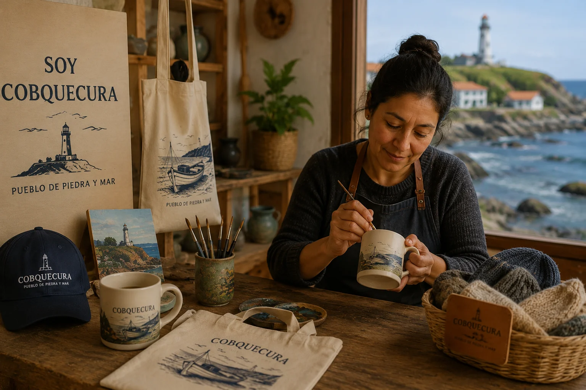

About SoyCobquecura
SoyCobquecura is an initiative created to celebrate the culture, traditions, and natural beauty of Cobquecura, Chile. Through locally inspired products, we aim to connect visitors with the unique identity of our coastal community while supporting local artisans and creators.
Our Story

The idea behind SoyCobquecura was born from a desire to share the traditions, landscapes, and creativity that make our town special. From handcrafted souvenirs to artwork inspired by the Pacific coast, every product reflects a piece of Cobquecura's identity.
Our goal is to create opportunities for local artisans while helping visitors take home meaningful memories of their experience in Cobquecura.
Our Mission
To promote local culture, support community artisans, and showcase products that represent the history, traditions, and natural beauty of Cobquecura.
Our Values
- Authenticity: Every product is inspired by the culture and identity of Cobquecura.
- Quality: We value craftsmanship and attention to detail.
- Community Support: We encourage local entrepreneurship and artisan development.
- Sustainability: We promote responsible production and respect for the environment.
Local Artisans
The heart of SoyCobquecura is its people. Local artisans contribute their skills, creativity, and knowledge to produce unique items inspired by the sea, local wildlife, traditional crafts, and the landscapes that define our region.
Why Cobquecura?
Cobquecura is known for its dramatic coastline, rich cultural heritage, and iconic landmarks such as the Piedra de la Iglesia and the sea lion colonies that inhabit the nearby rocky shores. These natural and cultural elements serve as inspiration for many of the products featured on this website.
Contact Us
We welcome questions, suggestions, and opportunities to collaborate with local artists and businesses.
Email: info@cobquecura.cl